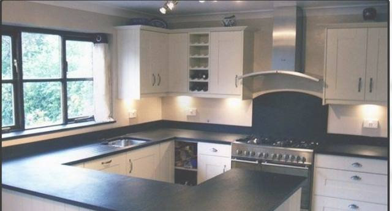
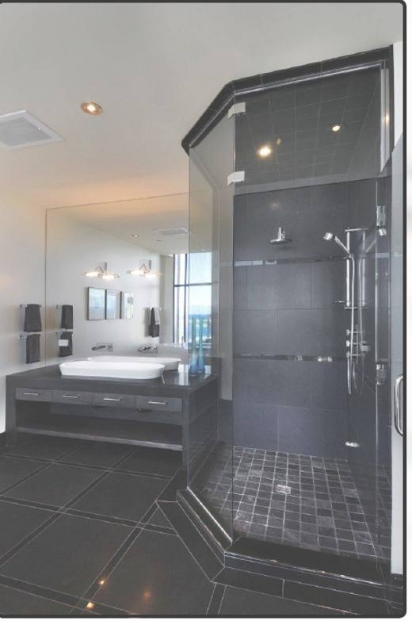
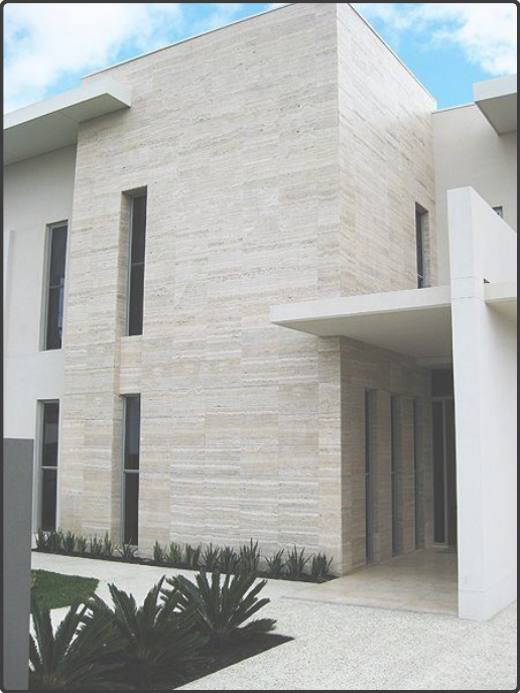
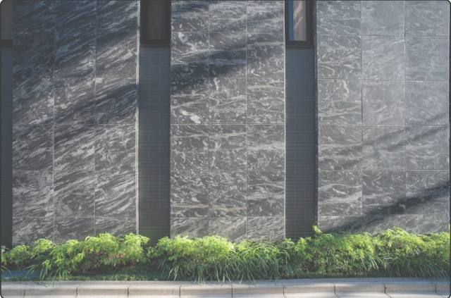
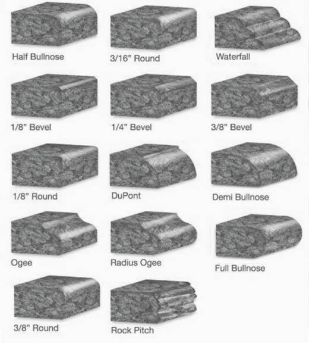

Exquisite, regal and high-quality granites for interiors, exteriors and architecture – quarried, processed and finished in Salem, Tamil Nadu.
View Granite ColoursGet a QuoteEstablished in 2020 in Tamil Nadu
At A.S. Granites, our vision is to become a trusted and leading name in the interior design and architecture industry by offering the most exquisite, regal, and high-quality granites and marbles.
We deliver products that embody elegance and durability, combining deep knowledge of natural resources with advanced technological expertise, while upholding the highest standards of safety and environmental responsibility.
We believe a truly remarkable structure begins with inspiration, is shaped through precision, and ultimately stands as a timeless masterpiece. Our mission is to source only the finest materials, highlighting their natural beauty and showcasing craftsmanship in every detail.
We aim to be a dependable supplier – valued not only for product quality but for our unwavering reliability and integrity.
Strength, luxury and lasting elegance – indoors and out.
Elevate your spaces with the timeless beauty of granite. Our premium selections bring durability, luxury and natural charm to interiors – perfect for sophisticated kitchens, bathrooms, floors and accent walls.


Enhance outdoor spaces with our rugged and refined exterior granite. Ideal for facades, pavements and landscapes – offering unmatched strength, weather resistance and lasting elegance in every architectural detail.


Our range of premium black & grey granites.
Half Bullnose, Full Bullnose, Bevel, Ogee, DuPont, Waterfall, Rock Pitch and more.

Special quality in export, checked slab by slab.
Photos and videos of our slabs, factory and completed work.
Send your requirement – we'll reply with slab details and pricing.
📍 9/28-A, Ondiveeranur, Marakottai (Po),
Kadayampatty (Tk), Salem (Dt) – 636 451,
Tamil Nadu, India
📞 +91 94422 48282 | +91 63839 18182
GSTIN: 33AUTPA9560G2ZE
GSTIN: 33PHKPS0609R1ZF